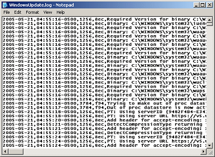

|
|
|
Sponsored Link •
|
Summary
This is the updated translation of a beginner-level paper I wrote for Stacktrace one year ago (see http://stacktrace.it/articoli/2008/05/gestione-dei-record-python-1/). It basically discusses Python 2.6 namedtuples (plus some musing of mine).
|
Advertisement
|
Everybody has worked with records: by reading CSV files, by interacting with a database, by coding in a programmming language. Records look like an old, traditional, boring topic where everything has been said already. However this is not the case. Actually, there is still plenty to say about records: in this three part series I will discuss a few general techniques to read, write and process records in modern Python. The first part (the one you are reding now) is introductory and consider the problem of reading a CSV file with a number of fields which is known only at runt time; the second part discusses the problem of interacting with a database; the third and last part discusses the problem of rendering records into XML or HTML format.
For many years there was no record type in the Python language, nor in the standard library. This is hard to believe, but true: the Python community has asked for records in the language from the beginning, but Guido never considered that request. The canonical answer was "in real life you always need to add methods to your data, so just use a custom class". The good news is that the situation has finally changed: starting from Python 2.6 records are part of the standard library under the dismissive name of named tuples. You can use named tuples even in older versions of Python, simply by downloading Raymond Hettinger's recipe on the Python Cookbook:
$ wget http://aspn.activestate.com/ASPN/Cookbook/Python/Recipe/500261/index_txt -O namedtuple.py
The existence of named tuples has changed completely the way of managing records: nowadays a named tuple has become the one obvious way to implement immutable records. Mutable records are much more complex and they are not available in the standard library, nor there are plans for their addition, at least as far as I know. There are many viable alternatives if you need mutable records: the typical use case is managing database records and that can be done with an Object Relational Mapper. There is also a Cookbook recipe for mutable records which is a natural extension of the namedtuple recipe. Notice however that there are people who think that mutable records are Evil. This is the dominant opinion in the functional programming community: in that context the only way to modify a field is to create a new record which is a copy of the original record except for the modified field. In this sense named tuples are functional structures and they support functional update via the _replace method; I will discuss this point in detail in a short while.
To use named tuples is very easy and you can just look at the examples in the standard library documentation. Here I will duplicate part of what you can find in there, for the benefit of the lazy readers:
>>> from collections import namedtuple
>>> Article = namedtuple("Article", 'title author')
>>> article1 = Article("Records in Python", "M. Simionato")
>>> print article1
Article(title='Records in Python', author="M. Simionato")
namedtuple is a function working as a class factory: it takes in input the name of the class and the names of the fields - a sequence of strings or a string of space-or-comma-separated names - and it returns a subclass of tuple. The fundamental feature of named tuples is that the fields are accessible both per index and per name:
>>> article1.title 'Records in Python' >>> article1.author "M. Simionato"
Therefore, named tuples are much more readable than ordinary tuples: you write article1.author instead of article1[1]. Moreover, the constructor accepts both a positional syntax and a keyword argument syntax, so that it is possible to write
>>> Article(author="M. Simionato", title="Records in Python") Article(title='Records in Python', author="M. Simionato")
in the opposite order without issues. This is a major strength of named tuples. You can pass all the arguments as positional arguments, all the arguments are keyword arguments and even some arguments as positional and some others as keyword arguments:
>>> title = 'Records in Python' >>> kw = dict(author="M. Simionato") >>> Article(title, **kw) Article(title='Records in Python', author="M. Simionato")
This "magic" has nothing to do with namedtuple per se: it is the standard way argument passing works in Python, even if I bet many people do not know that it is possible to mix the arguments. The only real restriction is that you must put the keyword arguments after the positional arguments.
Another advantage is that named tuples are tuples, so that you can use them in your legacy code expecting regular tuples, and everything will work just fine, including tuple unpacking (i.e. title, author = article1), possibly via the * notation (i.e. f(*article1)).
An additional feature with respect to traditional tuples, is that named tuples support functional update, as I anticipated before:
>>> article1._replace(title="Record in Python, Part I") Article(title="Record in Python, Part I", author="M. Simionato")
returns a copy of the original named tuple with the field title updated to the new value.
Internally, namedtuple works by generating the source code from the class to be returned and by executing it via exec. You can look at the generated code by setting the flag verbose=True when you invoke``namedtuple``. The readers of my series about Scheme (The Adventures of a Pythonista in Schemeland ) will certainly be reminded of macros. Actually, exec is more powerful than Scheme macros, since macros generate code at compilation time whereas exec works at runtime. That means that in order to use macro you must know the structure of the record before executing the program, whereas exec is able to define the record type during program execution. In order to do the same in Scheme you would need to use eval, not macro.
exec is usually considered a code smell, since most beginners use it without need. Nevertheless, there are case where only the power of exec can solve the problem: namedtuple is one of those situations (another good usage of exec is in the doctest module).
No more theory: let be practical now, by showing a concrete example. Suppose you need to parse a CSV files with N+1 rows and M columns separated by commas, in the following format:
field1,field2,...,fieldM row11,row12,...,row1M row21,row22,...,row2M ... rowN1,rowN2,...,rowNM
The first line (the header) contains the names of the fields. The precise format of the CSV file is not know in advance, but only at runtime, when the header is read. The file may come from an Excel sheet, or from a database dump, or could be a log file. Suppose one of the fields is a date field and that you want to extract the records between two dates, in order to perform a statistical analysis and to generate a report in different formats (another CSV file, or a HTML table for upload on a Web site, or a LaTeX table to be included in a scientific paper, or anything else). I am sure most of you had to do something like first at some point.
To solve the specific problem is always easy: the difficult thing is to provide a general recipe. We would like to avoid to write 100 small scripts, more or less identical, but with a different management of the I/O depending on the specific problem. Clearly, different business logic will require different scripts, but at least the I/O part should be common. For instance, if the originally the CSV file has 5 fields, but then after 6 months the specs change and you need to manage a file with 6 fields, you don't want to change the script; idem if the names of the fields change. Moreover, it must be easy to change the output format (HTML, XML, CSV, ...) with a minimal effort, without changing the script, but only some configuration parameter or command line switch. Finally, and this is the most difficult part, one should not create a monster. If the choice is between a super-powerful framework able to cope with all the possibilities one can imagine and a poor man system which is however easily extensible, one must have the courage for humility. The problem is that most of the times it is impossible to know which features are really needed, so that one must implement things which will be removed later. In practice, coding in this way you will have to work two or three times more than the time needed to write a monster, to produce much less. On the other hand, we all know that given a fixed amount of functionality, programmers should be payed inversally to the number of lines of code ;)
Anyway, stop with the philosophy and let's go back to the problem. Here is a possible solution:
# tabular_data.py
from collections import namedtuple
def headtail(iterable):
"Returns the head and the tail of a non-empty iterator"
it = iter(iterable)
return it.next(), it
def get_table(header_plus_body, ntuple=None):
"Return a sequence of namedtuples in the form header+body"
header, body = headtail(header_plus_body)
ntuple = ntuple or namedtuple('NamedTuple', header)
yield ntuple(*header)
for row in body:
yield ntuple(*row)
def test1():
"Read the fields from the first row"
data = [['title', 'author'], ['Records in Python', 'M. Simionato']]
for nt in get_table(data):
print nt
def test2():
"Use a predefined namedtuple class"
data = [['title', 'author'], ['Records in Python', 'M. Simionato']]
for nt in get_table(data, namedtuple('NamedTuple', 'tit auth')):
print nt
if __name__ == '__main__':
test1()
test2()
By executing the script you will get:
$ python tabular_data.py NamedTuple(title="title", author='author') NamedTuple(title='Records in Python', author="M. Simionato") NamedTuple(tit="title", auth='author') NamedTuple(tit='Records in Python', auth="M. Simionato")
There are many remarkable things to notice.
First of all, I did follow the golden rule of the smart programmer, i.e. I did change the question: even if the problem asked to read a CSV file, I implemented a get_table generator instead, able to process a generic iterable in the form header+data, where the header is the schema - the ordered list of the field names - and data are the records. The generator returns an iterator in the form header+data, where the data are actually named tuples. The greater generality allows a better reuse of code, and more.
Having followed rule 1, I can make my application more testable, since the logic for generating the namedtuple has been decoupled from the CSV file parsing logic: in practice, I can test the logic even without a file CSV. I do not need to set up a test environment and test files: this is a very significant advantage, especially if you consider more complex situations, for instance when you have to work with a database.
Having changed the question from "process a CSV file" into "convert an iterable into a namedtuple sequence" allows me to leave the job of reading the CSV files to the right object, i.e. to csv.reader which is part of the standard library and that I can afford not to test (in my opinion you should not test everything, there are things that must be tested with high priority and others that should be tested with low priority or even not tested at all).
Having get_table at our disposal, it takes just a line to solve the original problem, get_table(csv.reader(fname)): we do not even need to write a hoc library for that.
It is trivial to extend the solution to more general cases. For instance, suppose you have a CSV file without header, with the names of the fields known in some other way. It is possible to use get_table anyway, it is enough to add the header at runtime:
get_table(itertools.chain([fields], csv.reader(fname)))
For lack of a better name, let me call table the structure header + data. Clearly the approach is meant to convert tables into other tables (think of data mining/data filtering applications) and it will be natural to compose operators working on tables. This is a typical problem begging for a functional approach.
For reasons of technical convenience I have introduced the function headtail; it is worth mentioning that in Python 3.0 tuple unpacking has been extended so that it will be possible to write directly head, *tail = iterable instead of head, tail = headtail(iterable) - functional programmers will recognize the technique of pattern matching of conses.
get_table allows to alias the names of the field, as shown by test2. That feature can be useful in many situations, for instance if the field names are cumbersome and it makes sense to use abbreviations, or if the names as read from the CSV file are not valid identifiers (in that case namedtuple would raise a ValueError).
This is the end of part I of this series. In part II I will discuss how to manage record coming from a relational database. Don't miss it!
Have an opinion? Readers have already posted 5 comments about this weblog entry. Why not add yours?
If you'd like to be notified whenever Michele Simionato adds a new entry to his weblog, subscribe to his RSS feed.
 | Michele Simionato started his career as a Theoretical Physicist, working in Italy, France and the U.S. He turned to programming in 2003; since then he has been working professionally as a Python developer and now he lives in Milan, Italy. Michele is well known in the Python community for his posts in the newsgroup(s), his articles and his Open Source libraries and recipes. His interests include object oriented programming, functional programming, and in general programming metodologies that enable us to manage the complexity of modern software developement. |
|
Sponsored Links
|